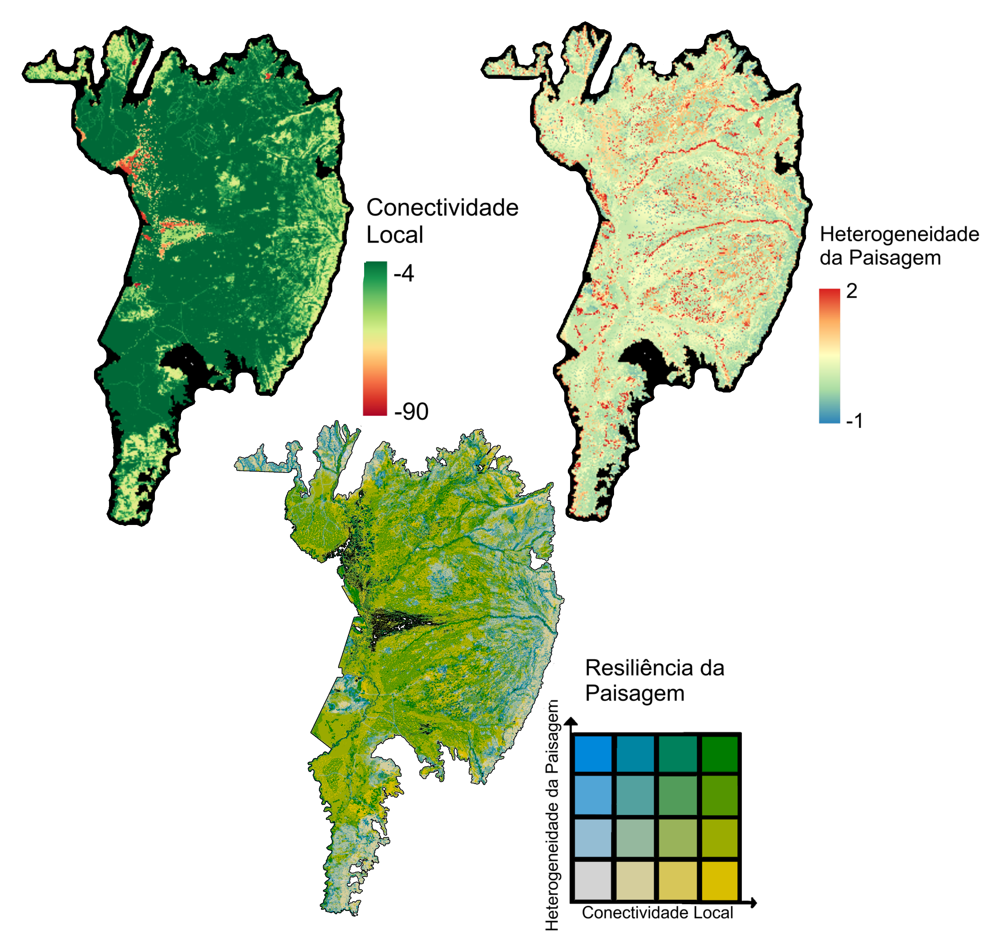
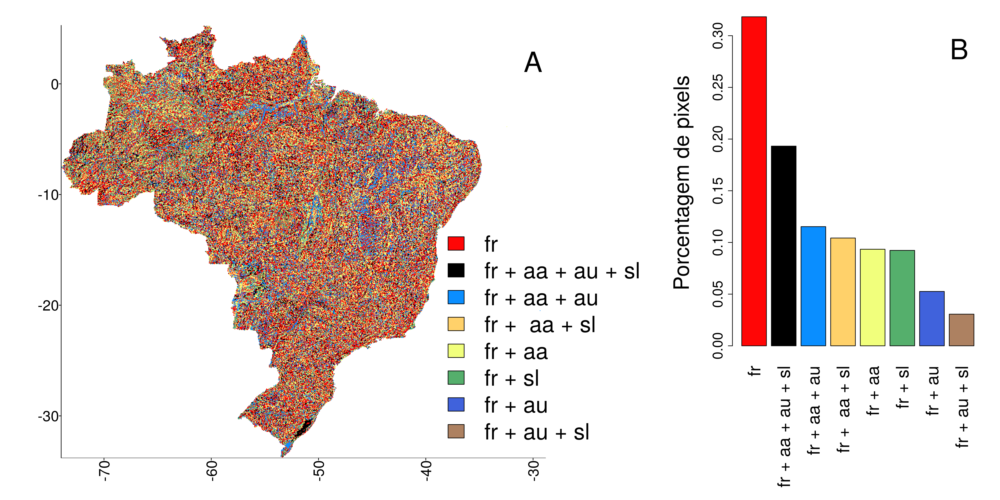

14 Resultados preliminares
Os mapas das camadas principais e das variáveis intermediárias da análise podem ser visualizados no seguinte link: https://projeto-resiliencia-tnc.hub.arcgis.com/?share=link.
Atenção: o projeto ainda está em andamento, então os resultados apresentados são ainda versões preliminares do estudo.
Abaixo são descritos resultados principais por bioma e alguns padrões gerais obtidos para cada uma das camadas.
14.1 Mapas por bioma
São apresentados abaixo os mapas de heterogeneidade da paisagem, conectividade local e resiliência da paisagem por bioma: Amazônia, Caatinga, Cerrado, Mata Atlântica, Pampa e Pantanal.



14.2 Heterogeneidade da paisagem (link)
As áreas de alta heterogeneidade da paisagem estão distribuídas por todo o Brasil (Figura 14.7). As regiões de destaque são aquelas próximas aos rios, em localidades com alta rugosidade do relevo, mudanças abruptas de declividade, alta densidade de áreas úmidas e riqueza de solos.

A heterogeneidade da paisagem foi calculada utilizando diferentes conjuntos de variáveis para cada localidade (Figura 14.8 A). A presença de todas as variáveis no cálculo da heterogeneidade, por todo Brasil, mostra que todas as variáveis foram importantes dependendo do contexto local (Figura 14.8 A). A variedade de formas de relevo foi a principal variável na atribuição da heterogeneidade da paisagem, seguida pela média de todas as variáveis (Figura 14.8 B). O índice de áreas úmidas e riqueza de solos também foram importantes nos locais onde a variedade de formas de relevo e a amplitude altitudinal não apresentaram altos valores (Figura 14.8 B).

As distribuições da heterogeneidade da paisagem para cada conjunto de variável tiveram medianas semelhantes, mas diferiram nas suas variâncias (Figura 14.9). As maiores heterogeneidades estiveram associadas à variedade de formas de relevo e índice de áreas úmidas (Figura 14.9).

No nível de bioma, todos eles apresentaram a variedade de formas do relevo e a média de todas as variáveis como as duas variáveis mais importantes (Figura 14.10). A partir dessas, os biomas diferiram um pouco: para Amazônia e Pantanal, a média de formas de relevo, amplitude altitudinal e riqueza de solo foram mais importantes; para Mata Atlântica e Pampa, amplitude altitudinal e formas de relevo se destacaram; e para Caatinga e Cerrado, foram as formas do relevo, amplitude altitudinal e índice de áreas úmidas. Além disso, o índice de áreas úmidas foi bastante representativo no Pantanal, quando somadas as porcentagens das localidades que utilizaram o índice de áreas úmidas (Figura 14.10).

Com relação a algumas regiões de destaque dentro dos biomas, é importante mencionar: - Na Amazônia, destacam-se o entorno dos vales dos rios menores (ex. Parque do Xingu), as regiões montanhosas ao norte do bioma (ex. Raposa Serra do Sol) e as regiões com maior rugosidade no relevo (ex. Território Kayapó) (Figura 14.1);
Na Caatinga, é possível identificar alta heterogeneidade da paisagem nas áreas de alta rugosidade do relevo (ex. Sítio Boqueirão), nas variações de declividade bruscas (ex. Chapada do Araripe) e nos vales de rios (ex. Assunção do Piauí) (Figura 14.2);
No Cerrado, observa-se alta heterogeneidade nas transições dos platôs das Chapadas para as áreas baixas (ex. Chapada dos Veadeiros, Chapadas do Rio São Franscisco), em localidades com alta rugosidade do relevo (ex. Serra da Canastra) e locais com variação de altitude (ex. Patamares Ocidentais da Bacia do Paraná). Nas áreas de relevo mais planas, destacam-se os rios Araguaia e das Mortes como as áreas de alta heterogeneidade, principalmente em função da presença de grandes áreas úmidas no entorno (Figura 14.3);
Na Mata Atlântica, as áreas de alta heterogeneidade da paisagem estão localizadas próximos aos vales das redes fluviais na região oeste do bioma (ex. Araçatuba, Galinhos), nas áreas de transições abruptas de declividade (ex. Bom Jardim da Serra) e com alta rugosidade do relevo (ex. Pacatuba-SE), e em localidades nas grandes cadeias de montanhas (ex. Serra da Mantiqueira, Serra do Mar) (Figura 14.4);
No Pampa, a heterogeneidade da paisagem se destaca em regiões com alta rugosidade do relevo (ex. Serra do Sudeste, APA do Ibirapuitã, na Campanha, e na região nordeste do Estado), e próximo a rios (ex. rio Jacuí) e lagos (ex. entorno da lagoa dos Patos) (Figura 14.6).
No Pantanal, a heterogeneidade da paisagem segue majoritariamente os padrões deposicionais da região, visto que pequenas declividades em um ambiente muito plano são relevantes na heterogeneidade da paisagem (Figura 14.5) devido ao contraste da variação de relevo com o entorno. As localidades com maiores valores de heterogeneidade da paisagem foram as próximas a rios maiores (Piquiri, São Lourenço e Taquari), lagoas da Nhecolândia e regiões mais altas (ex. Serra do Amolar), contrastantes com o entorno plano (Figura 14.5). Dentre regiões altas inseridas no Pantanal, destacamos a paisagem da Serra do Amolar (borda oeste do Pantanal) e alguns morros testemunho na planície Pantaneira.
14.3 Conectividade Local (link)
A conectividade local da paisagem apresenta um padrão diferente daquele apresentado na camada de heterogeneidade da paisagem, mostrando uma divisão entre regiões muito conectadas na região norte e outras com conectividade mais baixa nas região central e sudeste Figura 14.11. Essa distribuição evidencia uma fragmentação clara do mapa do Brasil em duas porções, diviIsso se deve ao histórico de ocupação dessas regiões e do uso atual com relação a agricultura e ocupação urbana.
O padrão de conectividade local encontrado reflete a distribuição espacial das classes de uso e cobertura do solo com valores de resistência distintos. É possível observar uma concentração alta de classes com alto valor de resistência na parte mais ao sul e leste da região Norte (coincidindo com o arco do desmatamento) que divide o Brasil em duas porções muito marcadas. Ao noroeste, na região Amazônica, está a porção com maior concentração de áreas naturais, com menores valores de resistência e, portanto com alta conectividade. Na porção sul e ao leste do arco do desmatamento há um mosaico de áreas com diferentes graus de resistência à movimentação dos organismos, prevalencendo classes com valores médios e altos de resistência na região Sul e Sudeste e classes com valores médios e baixos de resistência na região Nordeste, com uma porção litorânea marcadamente mais atropizada que as porções mais a oeste nesta região.

Dentro de cada bioma, podemos destacar alguns padrões gerais: - Na Amazônia, a conectividade local tende a ser alta de modo geral. As áreas de baixa conectividade estão situadas principalmente no “Arco do Desmatamento”, nas regiões do sul e leste do bioma, e ao longo dos grandes rios da região (ex. [citar alguns]) (Figura 14.1 BFIGURA para Amazonia esta com o valor invertido para conectividade).
Na Caatinga, a conectividade local é alta principalmente na porção ocidental do bioma e ao norte do rio São Francisco, onde há uma concentração espacial maior de áreas naturais e, portanto, com valores menores de resistência à movimentação de organismos. A porção leste do bioma se configura por uma pulverização mais fina de classes mais atropizadas (mais resistentes) entremeadas por áreas descontínuas com valores de resistência mais baixos, conferindo a essas parte do bioma valores de conectividade local mais baixos do que nas porções a oeste. Ao sul do rio São Francisco é possível identificar um mosaico mais marcado de grandes áreas com baixa conectividade local e grande áreas com alta conectividade local, refletindo, respectivamente, a predominância espacial de classes de uso e ocupação do solo mais antorpizadas (de alta resistência) e de áreas com predominância de classes menos antropizadas (com baixa resistência). O Rio São Francisco aparece também como uma importante barreira geográfica no bioma, devido a sua extensa largura em alguns trechos na região central (Figura 14.2 B).
No Cerrado, as regiões norte, leste e oeste possuem altos valores de conectividade. Na porção central e sul do bioma concentram-se as áreas com baixa conectividade, sendo as menos conectadas aquelas próximas a grandes centros urbanos como Goiânia, Campo Grande e Brasília. Na Chapada do Rio São Franscisco (Bahia), há também baixa conectividade nas áreas de agricultura. Por outro lado, a maior parte da região menos conectada possui áreas de alta e média conectividade dentro delas (Figura 14.3 B).
Na Mata Atlântica, a conectividade local é amplamente distribuída , porém espacialmente estruturado. Regiões de alta conectividade local concentram-se ao sul do bioma com diminuição da conectividade em direção ao limite norte, onde então um padrão bifurcado de áreas de alta conectividade emerge novamente, porém interposto por áreas de conectividade moderada (Figura 14.4 A). As áreas de menor conectividade, principalmente localizadas na maior extensão longitudinal do bioma, correspondem a grandes ocupações urbanas nos estados de São Paulo e Rio de Janeiro, áreas de maior densidade populacional do Brasil (Figura 14.2 B).
No Pampa, as localidades com alta conectividade estão localizadas na Serra do Sudeste, na Campanha (nas proximidades com a APA do Ibirapuitã) e na região das Missões. Em contraste, os locais com menor conectividade estão localizados próximo aos principais centros urbanos, como é o caso de Porto Alegre e região metropolitana, assim como nas proximidades com grandes rodovias (ex. ao longo da BR-116 e BR-287);
No Pantanal, a conectividade local de modo geral é alta na maior parte do bioma, a conectividade vai reduzindo em direção à borda leste em função do avanço da agricultura, no Pantanal do Taquari, por ser uma região inundada o ano todo, e próximas à Serra do Amolar e aos municípios de Corumbá e Ladário.
14.4 Resiliência da paisagem (link)
A resiliência da paisagem apresentou um padrão…

A Amazônia possui a maior porcentagem de áreas resilientes (39,5%), seguida por Pantanal (28,6%), Caatinga (19.9%), Cerrado (18,1), Pampa (13,2%) e Mata Atlântica (5,1%). [citar Figura histogramas] Essa mesma ordem é mantida para a porcentagem de áreas com alta conectividade local e baixa heterogeneidade, menor porcentagem de áreas de baixa resiliência e alta heterogeneidade e baixa conectividade local (Figura 14.13).
Uma avaliação mais detalhada dos resultados de resiliência por bioma mostra que: - As áreas mais resilientes da Amazônia estão concentradas na região oeste do bioma (estado do Acre) e na região norte do estado do Amazonas (Figura 14.1 C).
Na Caatinga, as áreas resilientes estão concentradas no interior do bioma (Figura 14.2 C).
No Cerrado, as áreas resilientes estão mais concentradas no norte do bioma (Figura 14.3 C).
A Mata Atlântica é o bioma com menor porcentagem de áreas resilientes e áreas conectadas, concentradas nas regiões sudeste, sul e norte do bioma (Figura 14.4 C).
No Pampa, as áreas resilientes estão na região central e oeste do bioma (Figura 14.5 C).
No Pantanal, as regiões de maior resiliência da paisagem são majoritariamente nas regiões com maior densidade de áreas úmidas (Figura 14.6 C). Essa dominância da conectividade local na resiliência da paisagem se dá pela estacionariedade dos valores de heterogeneidade da paisagem na maior parte da região. O padrão espacial da conectividade se mostra mais dominante na expressão geral da resiliência da paisagem e os valores mais altos de conectividade da paisagem são coincidentes com as lagoas da Nhecolândia, rios Taquari, Piquiri e São Lourenço, por serem regiões com maior heterogeneidade da paisagem.